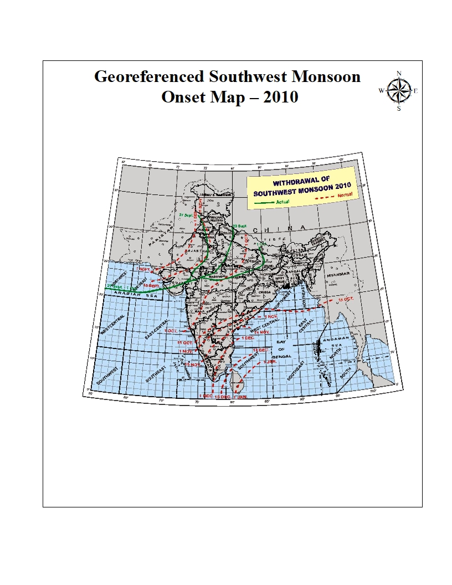
Jitesh Chandra
I'm a
Geospatial researcher working with Earth observation, Remote Sensing, GIS, GeoAI, environmental modelling and disaster risk assessment.
About
Jitesh Chandra is a Remote Sensing & GeoAI Researcher with 3+ years of experience in GIS, Remote Sensing, Machine Learning, Google Earth Engine, and Geospatial Analysis. He also works on freelance geospatial projects, delivering practical solutions for research and real-world applications.
GIS & GeoAI Specialist • Remote Sensing • Hydrological Modelling • WebGIS
Specializing in Remote Sensing, GIS, Digital Mapping, GeoAI, Google Earth Engine, Machine Learning, LULC Analysis, WebGIS, and Hydrological Modelling. Proficient in industry-standard geospatial tools and committed to delivering accurate, reproducible, and data-driven solutions.
Education:
M.Sc. Geoinformatics
Date of Birth:
30 July 2003
Location:
Varanasi, India
Experience:
3+ Years
Freelance:
Available
Focus:
Remote Sensing & GeoAI
Education:
- Bachelor of Arts (B.A.) in Geography — 63.83% | 2023
- M.Sc. in Geoinformatics — Central University of Jharkhand, Ranchi | CGPA: 9.20/10 | 2025
- Master's Thesis: Spatiotemporal Analysis of Crop Yields Derived from Light Use Efficiency-Based GPP Model and Satellite Data for Assessing Food Security in Chandauli District
- Research Focus: Remote Sensing, GIS, GeoAI, Agricultural Monitoring, Crop Yield Analysis, and Hydrological Modelling.
Resume
My academic background and professional research experience.
Education
M.Sc. in Geoinformatics
2023 – 2025Central University of Jharkhand
Dissertation on spatiotemporal analysis of crop yields using a Light Use Efficiency based GPP model and satellite data for assessing food security in Chandauli, Uttar Pradesh.
Research Interests
- GeoAI & Spatial Machine Learning
- Remote Sensing & Earth Observation
- Hydrological Modelling & Flood Risk
- Agricultural Monitoring
- Environmental & Land-Cover Modelling
Professional Experience
JRF-GATE / Geospatial Research
Apr 2026 – PresentPunjab Remote Sensing Centre, Ludhiana
Working on disaster management and flood risk assessment using GIS, Remote Sensing and hydrodynamic modelling.
Junior Research Fellow
Oct 2025 – Mar 2026Punjab Remote Sensing Centre
Worked on land-use and land-cover change analysis using satellite Earth observation and geospatial techniques.
Skills
Technical expertise in Remote Sensing, GIS, GeoAI, Machine Learning, hydrological modelling, and geospatial programming developed through research and applied projects.
Remote Sensing & GIS
95%
ArcGIS Pro, ArcMap, QGIS, SNAP, ENVI, ERDAS Imagine, Google Earth Pro
Google Earth Engine
92%
JavaScript, Satellite Data Processing, LULC Classification & Earth Observation
Machine Learning
86%
Random Forest, SVM, Decision Tree, XGBoost, ANN, MLP
Deep Learning & GeoAI
82%
CNN, U-Net, DeepLabV3+, Semantic Segmentation, Spatial AI & Geospatial Modelling
Python & GIS Automation
88%
Python, OpenLayers, GIS Automation, GeoAI, Spatial Analysis & Data Processing
Hydrological Modelling
82%
HEC-HMS, HEC-RAS, CropWat, AquaCrop
Environmental Modelling
80%
RUSLE Model, TerrSet Modeler, Land & Environmental Analysis
Photogrammetry & 3D
78%
Agisoft Metashape, CloudCompare, Photogrammetry & 3D Point Cloud Processing
GNSS & Survey Processing
75%
RTKLIB, GNSS Data Processing, Coordinate & Survey Data Analysis
Spatial Database
78%
PostgreSQL, PostGIS, Spatial Database Management
Web GIS & Web Development
75%
HTML, CSS, OpenLayers, Interactive Maps & WebGIS
Geospatial Modelling
85%
LULC Change Analysis, Crop Mapping, Flood Mapping, Spatial Modelling
Portfolio
Selected projects in GIS, Hydrology, Remote Sensing, WebGIS, Photogrammetry and GeoAI-driven spatial analysis.
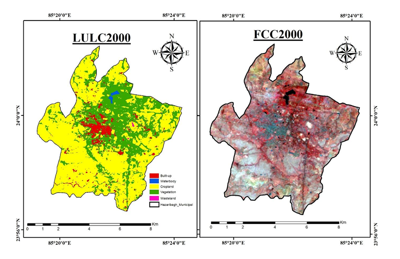
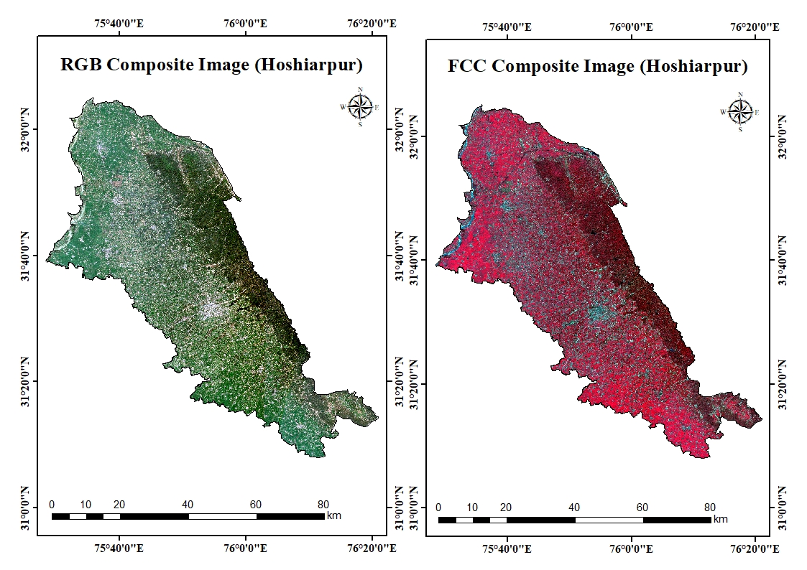
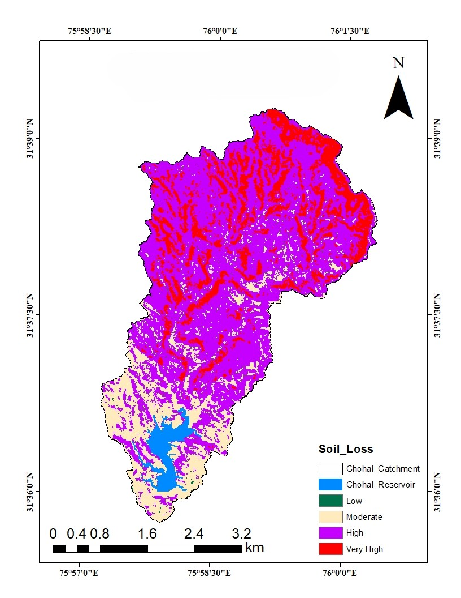
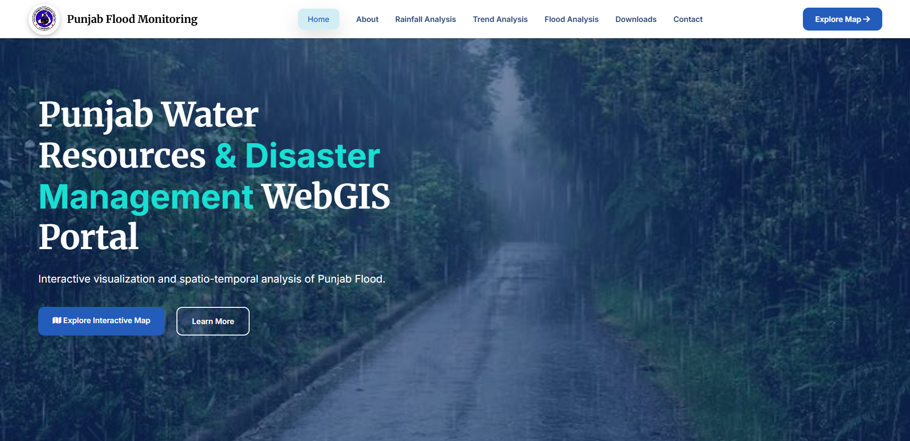
1 / 1
Project Information
Category:
Client:
Project Date:
Tools:
Project Description
Methodology
Key Outputs
Services
Geospatial and Earth observation services based on my technical expertise.
GIS Analysis
Spatial analysis, thematic mapping, geoprocessing and cartographic visualization.
Remote Sensing
Satellite image processing, LULC classification and Earth observation analysis.
GeoAI & Machine Learning
Machine learning and deep learning for spatial prediction and environmental intelligence.
Flood Risk Assessment
Flood mapping, damage assessment, hydrodynamic modelling and spatial risk analysis.
Agricultural Monitoring
Crop monitoring, vegetation dynamics, GPP modelling and satellite-based crop assessment.
Environmental Modelling
Soil erosion assessment, RUSLE, susceptibility mapping and environmental change analysis.
Research & Publications
Research interests, scientific work and publication activities in Remote Sensing, GIS, GeoAI and environmental applications.
Earth Observation
Satellite-based monitoring of land, vegetation, agriculture and environmental change using multi-temporal Earth observation datasets.
GeoAI & Machine Learning
Machine learning and deep learning approaches for spatial classification, prediction, environmental modelling and geospatial intelligence.
Flood Risk & Disaster Assessment
Flood inundation mapping, flood hotspot analysis, hydrodynamic modelling and disaster risk assessment using GIS and satellite data.
Environmental Modelling
Soil erosion assessment, vegetation dynamics, environmental hazards and ecosystem monitoring using geospatial modelling.
Agricultural Monitoring
Crop monitoring, GPP modelling, crop yield analysis, vegetation productivity and food-security applications.
Spatial Data Science
Python-based geospatial workflows, statistical analysis, spatial modelling and scientific visualization.
Publications
PUBLISHED
Modeling Wheat Yields Using Vegetation Photosynthesis Model Through Remote Sensing Satellite Data in Chandauli District, Eastern Uttar Pradesh (India)
International Journal of Plant Production · 2026 · 20 · 67
Evaluating ENSO–Vegetation Interactions and Variability Using Remote Sensing-Derived Vegetation Indices and Principal Component Analysis
Frontiers in Earth Science · 2026 · 14 · 1901756
UNDER REVIEW
Deep Learning–Based Sea–Land Segmentation and Multi-Temporal Shoreline Change Analysis Using Landsat Imagery: A Case Study of Mousuni Island, India
Geospatial Analysis of Urban Sprawl, Ecological Transformation and Urban Heat Island Dynamics in Bhubaneswar, India
Hybrid SAR and Optical Remote Sensing Framework for Flood Inundation Mapping and Crop Damage Severity Evaluation Using Geospatial Intelligence
ABSTRACT PRESENTATIONS
Training & Achievements
Professional training certificates, technical development and academic achievements in geospatial science.
Training
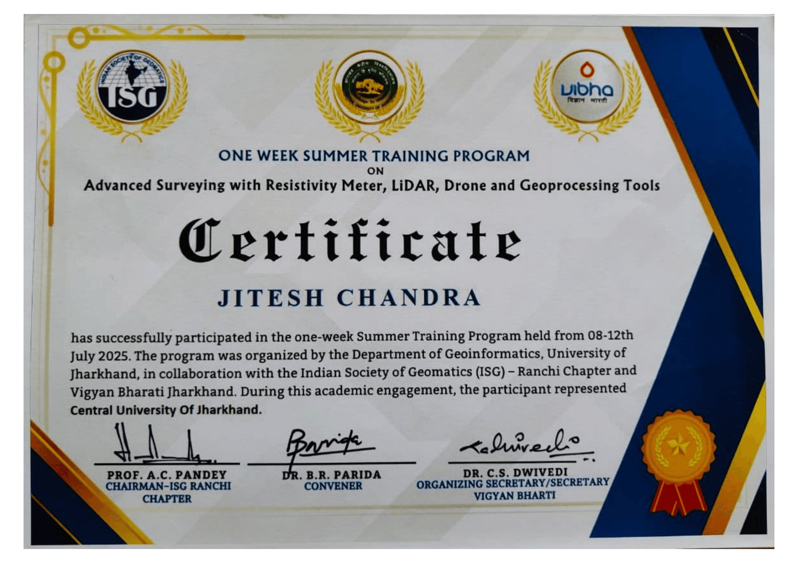
Advanced Surveying & Resistivity Meter
Technical training focused on advanced surveying methods and resistivity-meter based geophysical data acquisition and field applications.
View Certificate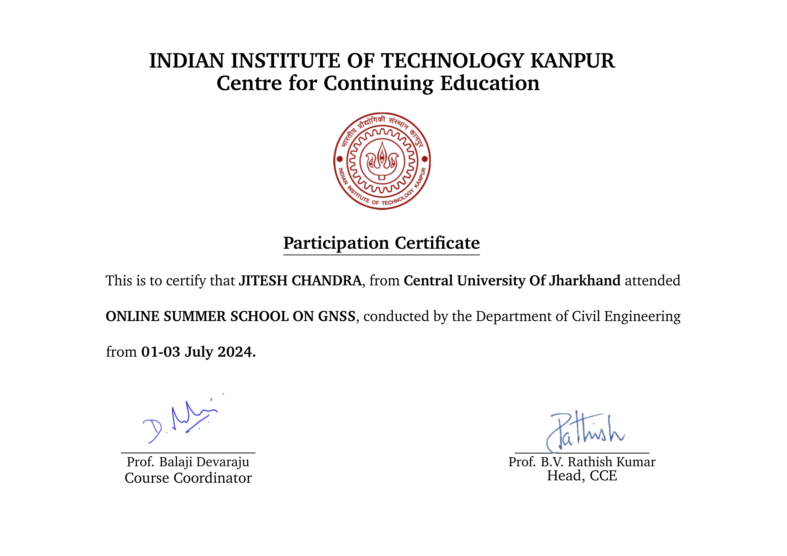
GNSS Training
Practical training in Global Navigation Satellite System (GNSS) concepts, positioning, field data collection and geospatial applications.
View Certificate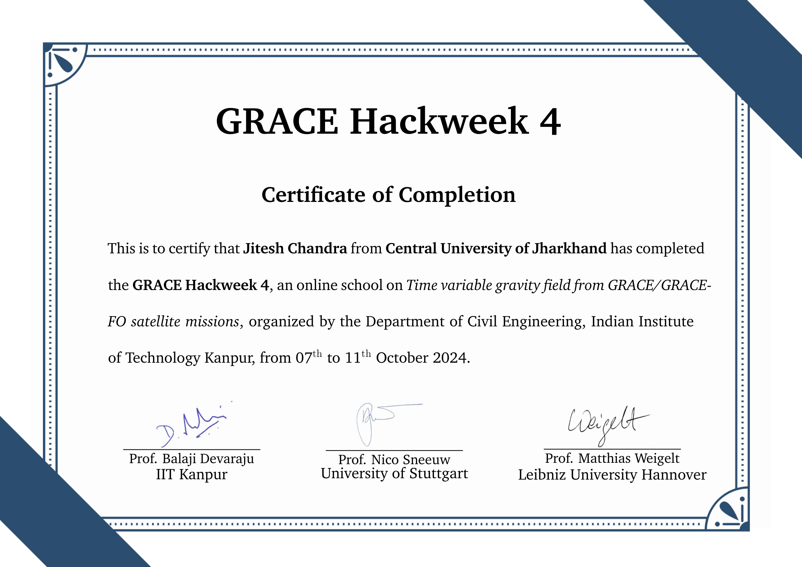
GRACE Hackweek
Technical learning and hands-on development related to GRACE satellite data, Earth observation and geospatial analysis.
View Certificate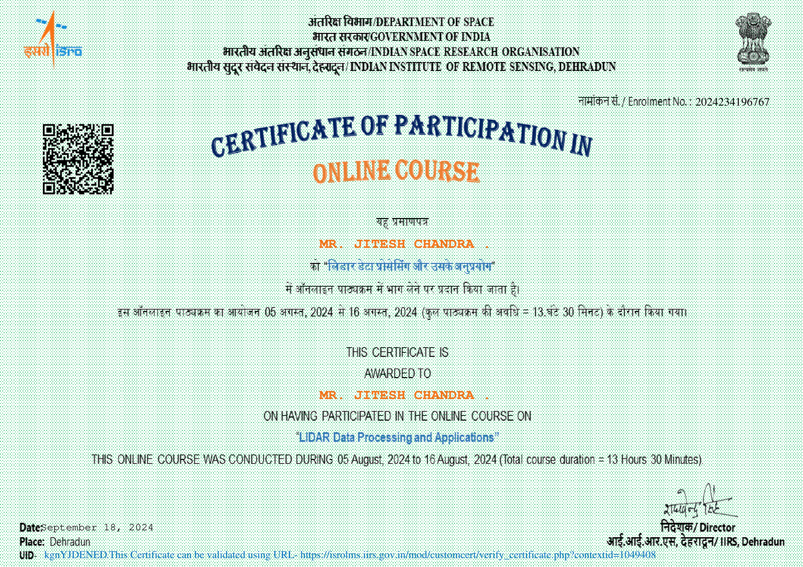
LiDAR Training
Training related to LiDAR technology, remote sensing data and geospatial applications for Earth observation and spatial analysis.
View Certificate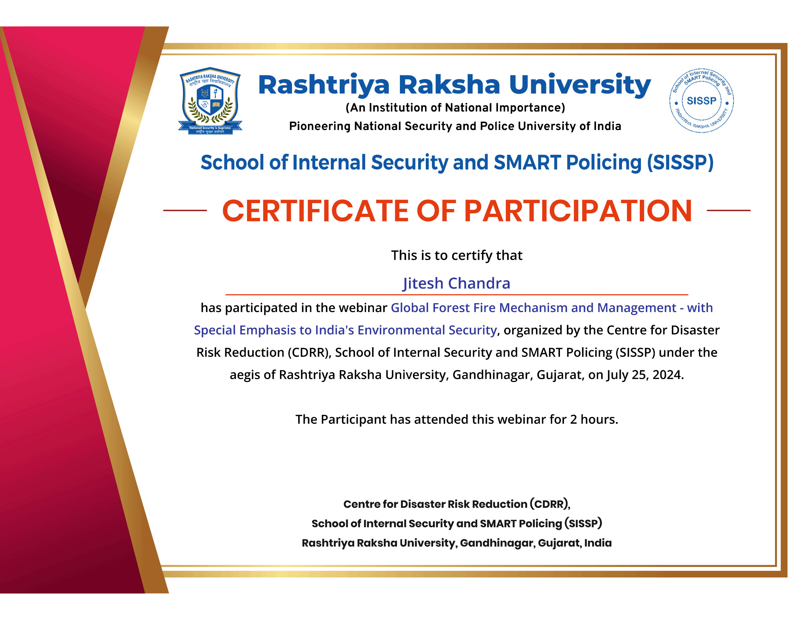
Forest Fire & Geospatial Applications
Training related to forest-fire assessment and the use of geospatial technologies for environmental monitoring and hazard analysis.
View Certificate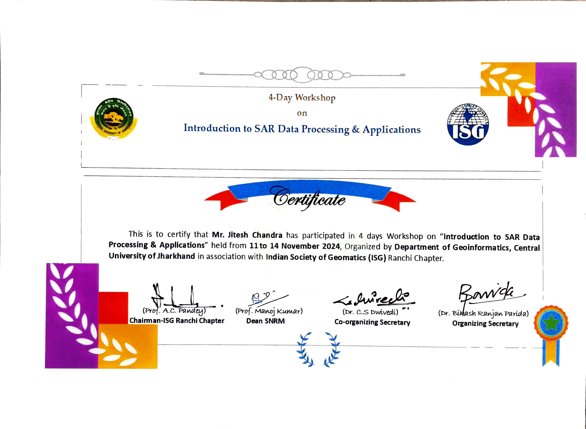
SAR Data Training
Training in Synthetic Aperture Radar (SAR) data, satellite image interpretation and applications in Remote Sensing and geospatial analysis.
View CertificateAchievements
GATE 2026 Qualified – Geomatics Engineering
Qualified GATE 2026 in Geomatics Engineering, conducted by Indian Institute of Technology Guwahati (IIT Guwahati).
Gallery
Selected moments, field activities, training events, presentations and professional experiences in geospatial science.
Contact
Interested in research collaboration, PhD opportunities or geospatial projects? Feel free to get in touch.
Location
India